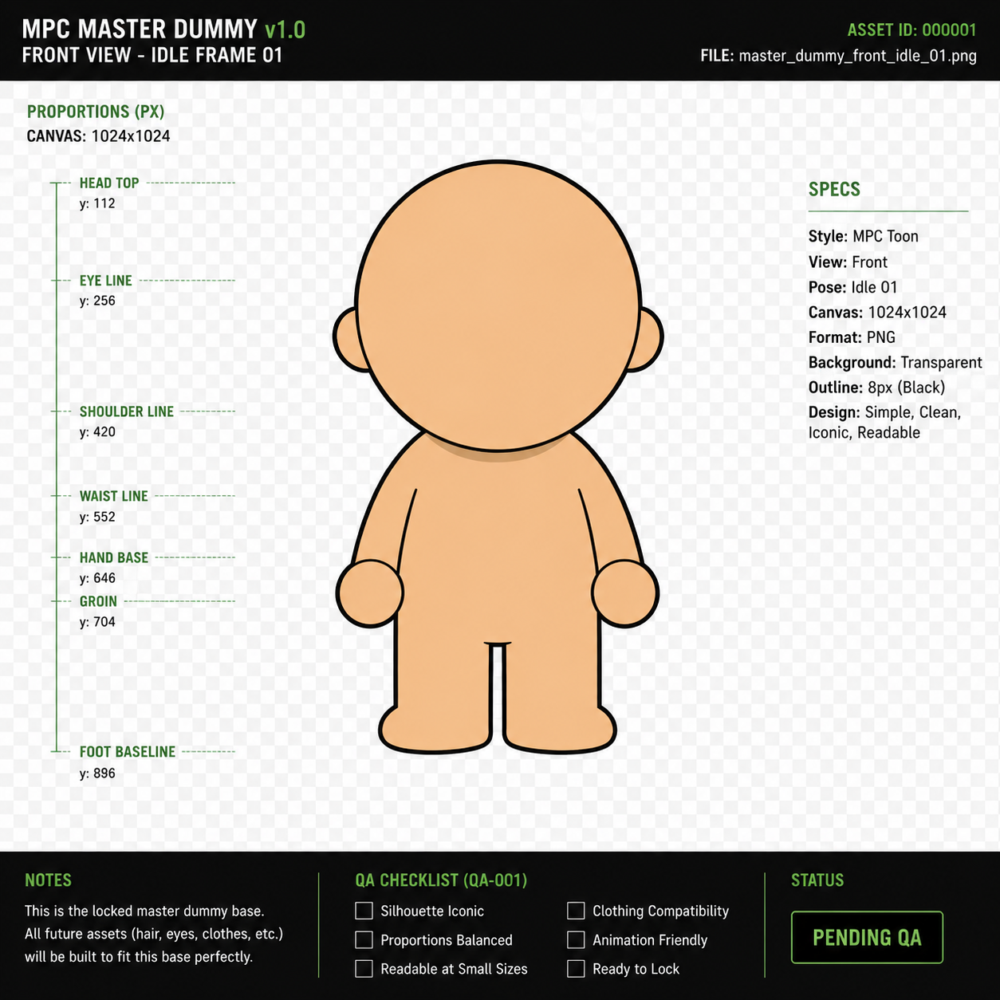
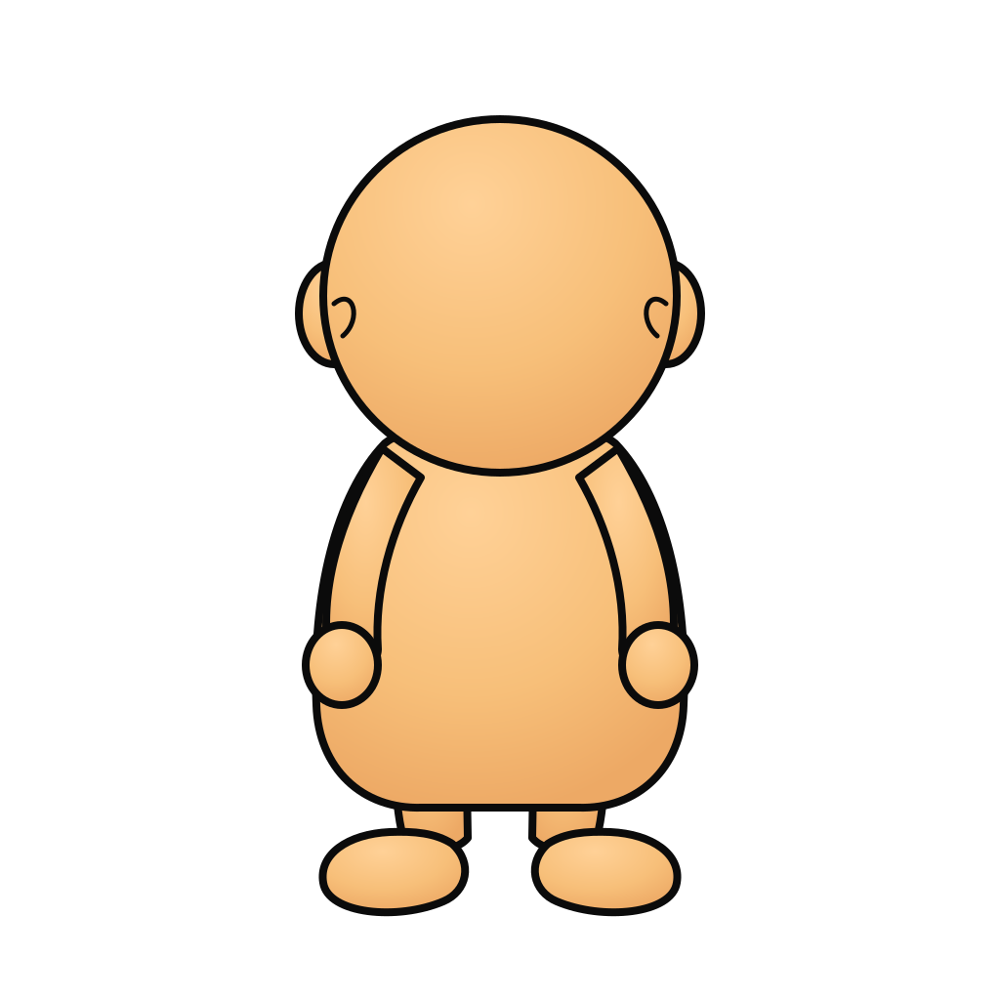
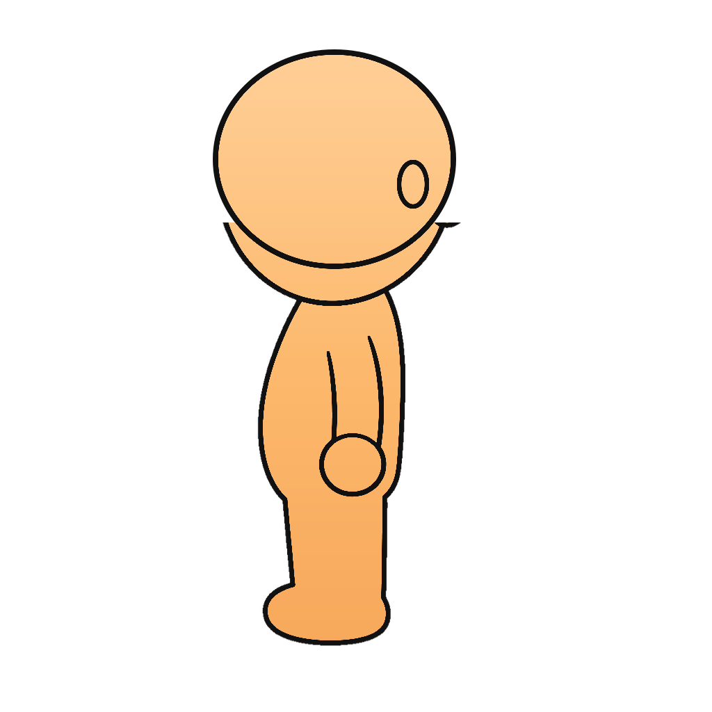

Approved Target Reference
This is the visual target for MPC Master Dummy v1.0. Future frame exports must match this silhouette, outline weight, roundness, and clean toon finish.

The imported frame pack does not match the approved mockup target.
This is the visual target for MPC Master Dummy v1.0. Future frame exports must match this silhouette, outline weight, roundness, and clean toon finish.

These are actual files currently in the repository, but they are not approved production art. The left/right/back views especially fail the proposed look.


Produce a real transparent PNG source for master_dummy_front_idle_01.png
from the approved target, then build consistent front/back/left/right idle
and walk frames from that same source. Do not accept generated filler frames
just because they satisfy the folder structure.